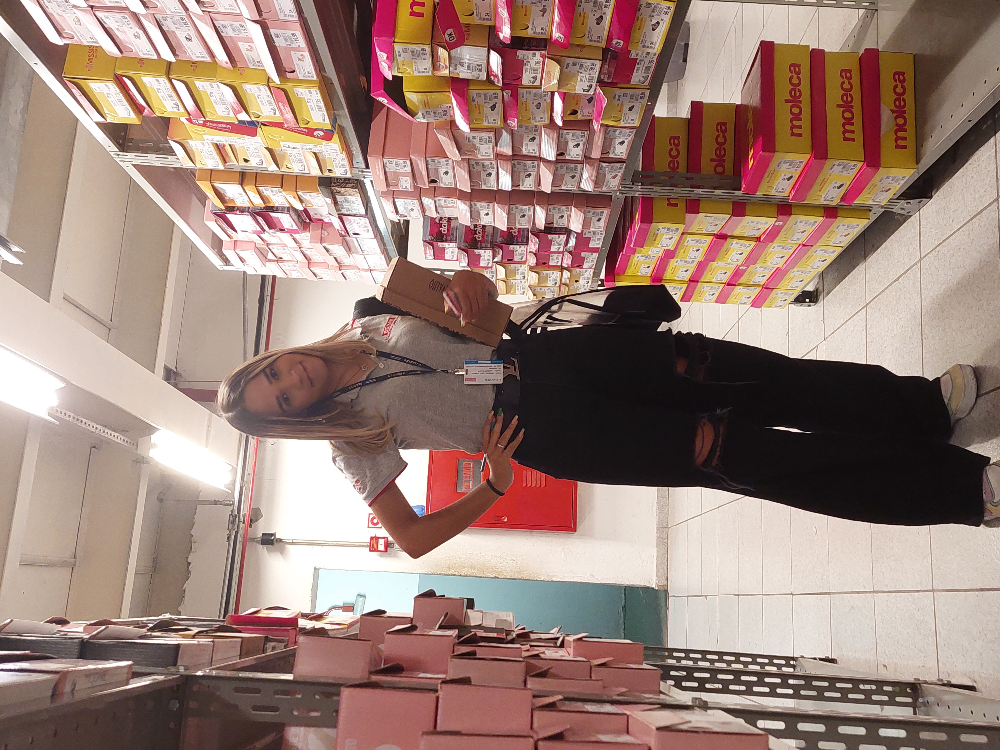
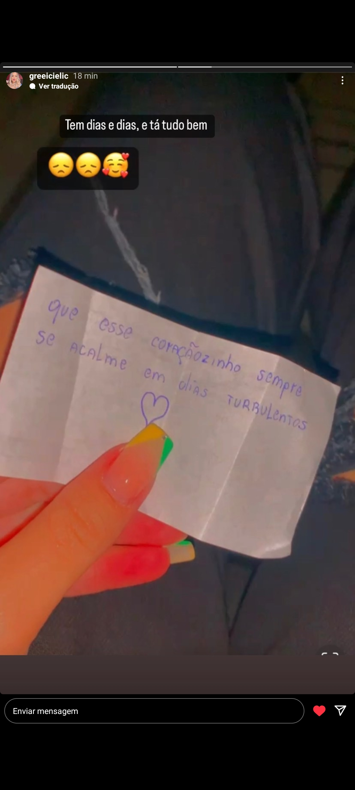
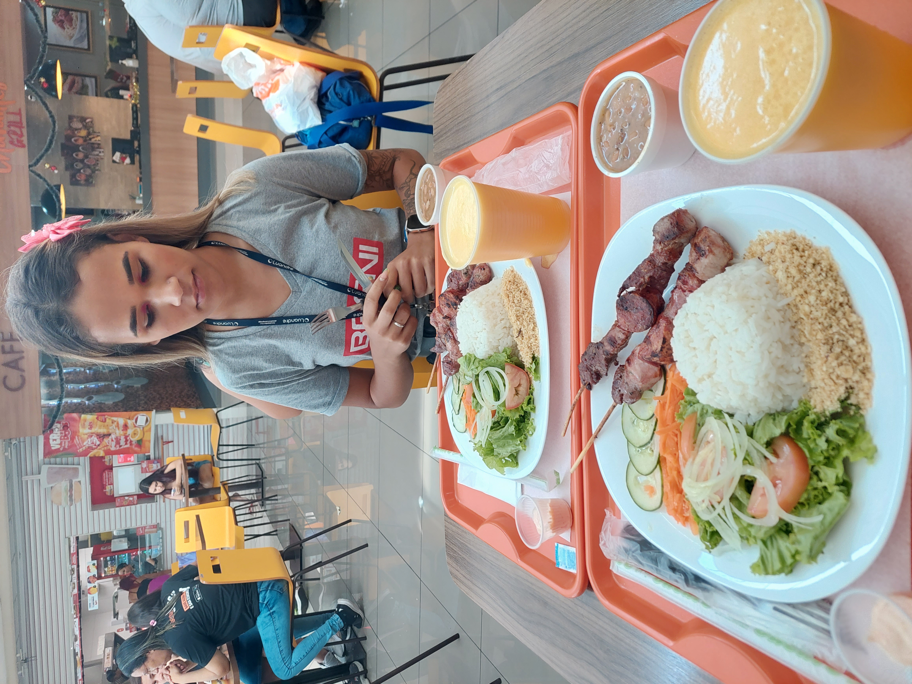
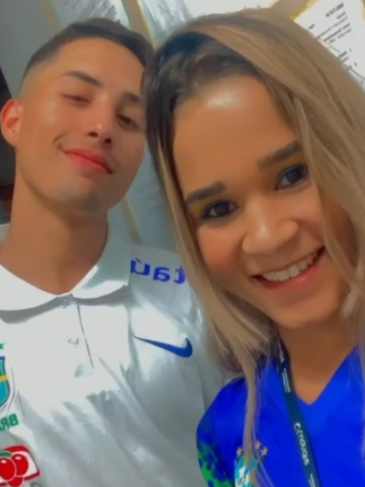

O inicio de tudo
Em um dia bem estressante ela me apareceu com aquele sorrisinho que futuramente iria acabar cmg em cada segundo, um dia onde eu so queria sair daquele ambiente hostil, me trouxeram ela para que eu a instruice as funçoes do trabalho, confesso que nesse dia eu mal queria ver alguem, então de certa forma não dei muita importancia.
se passaram dois dias e em um sabado, ela me vem com a seguinte frase, "dormiu comigo paulo ?", o mais curioso disso é que ela n errou meu nome, isso ja me surpreendeu de inicio, e fiquei com isso na cabeça o dia todo e passei a reparar mais naquela garota que no fim das contas era simpatica e muito mas muito gata, pelo amor de deus...
E quem nunca se deparou com uma pessoa que passou a mexer com seu psicologico em ?? no meu caso ela me aparece de repente e da mesma forma acaba se tornando muito.
Detalhes que me encantam
muita coisa nela me chama atenção, acredito mais ainda que seja pelo fato dela ser totalmente autentica em tudo que ela é ou que ela faça, ela sempre me passou muita sinceridade nas coisas que ela me falava, tanto quando falava dos outros ou dela mesma, tem vezes em que eu paro e fico somente observando ela falar e sempre me pego pensando na mesma coisa, será que ela é de verdade mesmo ????
- os olhares
- Os bilhetinhos
- nossos almoços
- Os roles
o que eu quero dizer com olhares ? na realidade tudo que temos hoje, eu dedico aos nossos olhares, tanto os mais singelos, quanto os mais provocantes, isso eu digo de forma geral, tudo começou num olhar, e isso é algo que sempre vai ficar eternizado ate por que eu sempre vou olhar pra ela do mesmo jeito. com um brilho enorme estampado.

numa intenção inocente de elogiar ela em um dia em que ela estava muito linda, escrevi um bilhetinho pra ela, só não fazia ideia de que isso se tornaria uma marca registrada nossa, onde todos os dias em que ela esteve na loja, sempre trocavamos bilhetinhos sobre coisas diversar
não demorou muita para que a gente passase a almoçar juntos, e dai todos os dias passamos a almoçar juntos, ela nunca trazia marmita então sempre iamos na rua, um detalhe que ficou como uma marca registrada tambem, sempre tinhamos nossas melhores conversas no almoço, onde tiravamos duvidas e alem de tudo era o nosso tempinho em que podiamos ficar juntos.
no inicio eu confesso que estava com receio de como seria a greicieli bebada, mas no final das contas KKKK ela é super engraçada kkk, coisa que hoje eu admiro de forma que nem eu entendo, amo sair com ela e aproveitar os momentos em que temos, pois acredito que tenha sido o melhor dia que tivemos ate hoje, o dia em que me senti mais proximo dela, o dia em que eu olhava nos olhos dela e via algo diferente, coisa muito doida, abaixo ta a foto que eu mais gosto.

Presentes e linguagem de amor
uma das coisas que mais nos marcam são as nossas formas de demonstrar as coisas, eu sempre acho que estou demonstrando pouco, portanto eu sempre me dedico mais e mais para que ela sempre esteja segura daquilo que eu digo, e ela tem como sua linguagem de amor a confirmação, então ela sempre pergunta as coisas e eu sempre afirmo pra ela, em forma de elogio ou em forma de agrados, eu amo das presentes e ela ja percebeu que é algo que eu sempre farei.

Considerações finais
hoje tem mais de um mes em que nos conhecemos e na realidade ja parece uma grande eternidade, parece que ja eramos amigos a anos, e nos conhecemos de forma muita mas muita rapida, se me perguntam eu nao consigo responder de forma concreta como tudo aconteceu, até por que eu nem entendo como tudo isso foi se desenrolando, só sei hoje que é algo que mesmo sem saber explicar, eu pretendo sempre levar ela comigo, uma pessoa que me encantou e me mostrou um mundo unico que so existe dentro dos olhos dela, uma pessoa que tem milhoes de sentimentos guardados ali dentro daquele coraçãozinho, escondidos a sete chaves, e eu pretendo achar chave por chave e ir desvendando cada dia mais essa pessoa maravilhosa, eu so tenho a agradecer pelo momento em que ela apareceu pra mim, algo doido, algo que mexeu comigo e segue mexendo cada vez mais... espero que voce esteja lendo isso agora, e saiba e quem sabe mensure, o quao importante, e o quao incrivel voce é, e o quao ainda vai ser, com um carinho enorme dedico esse site que não foi nd rapido nem pratico fazer, pra voce, meu bem, e que voce leve sempre isso na sua mente, você sempre sera a minha pessoa favorita.
E claro, não sei se vc lembra, mas te disse que essa musica me lembrava voce, ainda segue sendo a musica que eu mais escuto quando sinto saudades.
